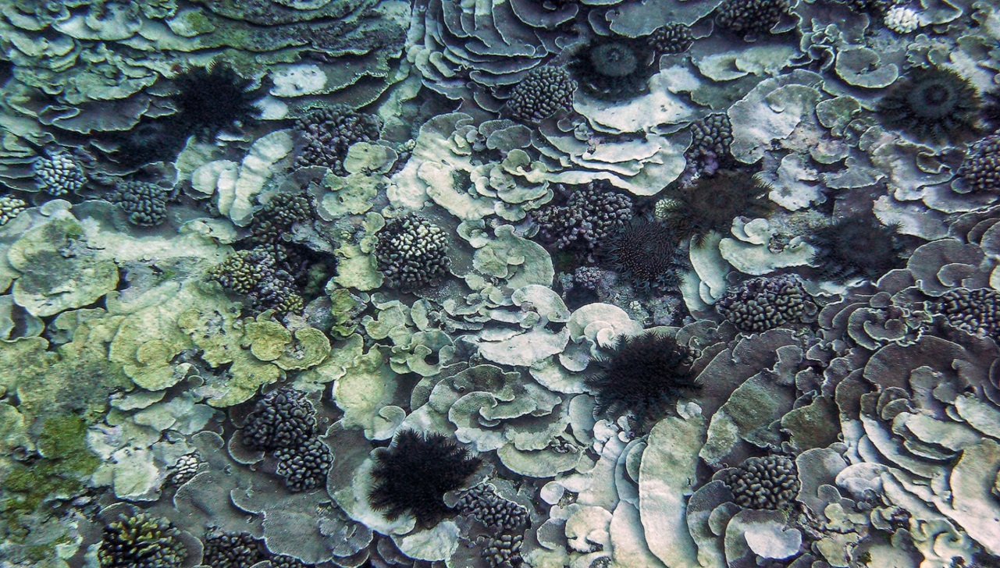

L'acanthaster
Acanthaster planci est une des plus grandes étoiles de mer tropicales Hérissée d’épines venimeuses, elle vit dans les récifs coralliens du Pacifique et de l’Océan Indien. Ne la touchez surtout pas : sa piqûre est très douloureuse !
>Peu visible durant la journée, l’acanthaster sort de sa cachette pendant la nuit pour partir en quête de sa proie : le corail. Grâce à l’action coordonnée de ses centaines de pieds, elle peut atteindre une vitesse de 10-20 mètres à l’heure !
Une acanthaster adulte peut atteindre 70 cm de diamètre pour plus de 3 kg.
Le Triton
La toutoute ou grand triton (Charonia tritonis) est un des rares prédateurs osant s’attaquer aux acanthasters adultes. Totalement insensible à ses épines, elle l’attire à l’intérieur de sa carapace pour la consommer vivante. Mais son appétit est limité : pas plus d’une acanthaster par semaine !
>Des crevettes ou certains poissons comme le napoléon, les perroquets à bosse, les balistes, attaquent parfois les acanthasters. Mais lorsque leur nombre diminue à cause de la surpêche, ces espèces ne peuvent plus jouer plus leur rôle de « maintien de l’ordre »...
Pour protéger nos récifs des acanthasters, préservons les toutoutes et les napoléons!
Le blanchissement
Les acanthasters adultes se nourrissent exclusivement de corail vivant. Les cicatrices blanches qu’elles laissent derrière elles sont un bon indice : si vous en apercevez, il y a de fortes chances qu’une acanthaster fasse sa sieste digestive bien cachée à proximité...
>En consommant de préférence les coraux à croissance rapide (par exemple les Acropora branchus), elles laissent à d’autres espèces la possibilité de s’installer. Elles contribuent ainsi au maintien de la biodiversité corallienne et au dynamisme de l’écosystème.
Une acanthaster adulte peut consommer environ 10 m² de corail par an.
Outbreaks
Normalement, les acanthasters sont rares : en 10 minutes de nage, vous ne devriez pas en voir plus de quelques-unes, surtout la journée. Mais parfois le système s’emballe : les acanthasters se multiplient de manière incontrôlable et envahissent les récifs, dévastant tout sur leur passage. Un peu comme les invasions de sauterelles en milieu terrestre !
>Ces épisodes d’infestation (« outbreaks ») sont parmi les plus graves perturbations affectant les récifs coralliens. Plus d’un tiers des récifs de la région Pacifique seraient actuellement affectés, avec des mortalités de coraux massives pouvant dépasser 90% dans les zones les plus touchées.
En 30 ans, près d’un quart de la grande barrière de corail australienne a été dévasté par les acanthasters.

La Nouvelle-Calédonie est vaste ! Qui, mieux que les usagers du lagon, qu’ils soient pêcheurs, plongeurs ou amateurs de ballades nautiques, saurait garder un œil sur nos récifs ? Depuis son lancement par l’IRD en 2014, la plate-forme de suivi participatif OREANET (« Oceania Regional Acanthaster Network ») permet à toute personne observant des acanthasters de les signaler via un site web ou une application smartphone gratuite.
La faute du changement climatique

Ces dernières années, on signale de plus en plus d’infestations d’acanthasters. Pourquoi ? La sensibilisation du public et des scientifiques y est surement pour quelque chose, mais pas seulement.
>Un des grands suspects est… le changement climatique. L’augmentation de la température des eaux de surface et leur enrichissement en nutriments dans les zones côtières sont des facteurs favorables à la survie des larves d’acanthaster, donc à l’augmentation des populations d’adultes atteignant les récifs.
Une seule acanthaster femelle peut pondre jusqu’à 60 millions d’œufs !
Les conséquences
Même s’il existe des preuves historiques montrant que les récifs coralliens peuvent se rétablir après coup, ces proliférations ne font qu’exercer encore plus de pression sur des systèmes déjà affaiblis par la surpêche, les pollutions, le changement climatique etc.
>Les effets en cascade de la disparition des coraux peuvent avoir des répercussions très néfastes sur l’écosystème tout entier : baisse importante de la diversité et de l’abondance de poissons et des invertébrés associés, voire disparition complète de certaines espèces. D’où la vive inquiétude des pays dans lesquels les ressources côtières constituent la base de la pêche vivrière traditionnelle...
En 2014, plus de 4 tonnes d’acanthasters ont été ramassées sur un petit récif de l’ile de Santo (Vanuatu).
Quelles solutions ?

Aucune méthode ne permet à l’heure actuelle de lutter efficacement contre les infestations d’acanthasters. La plus courante consiste à envoyer des plongeurs pour les prélever manuellement, puis à les détruire à terre. Un travail de titan !
>Autre possibilité : injecter une solution toxique directement dans les acanthasters. Presque tout y est passé : produits chimiques et même produits d’entretien ménagers ou désherbants ! Si certains sont efficaces, ils peuvent avoir des effets néfastes sur l’environnement marin.
En 2014, l’IRD a découvert une nouvelle méthode très efficace : des injections de jus de citron ou de vinaigre, 100% écologiques et peu coûteuses !